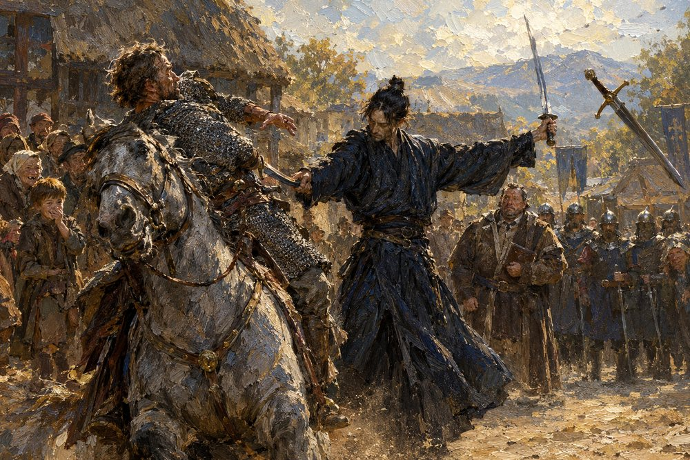

Record 8 of 14
On the morning of the weighing at Vilarnau, Sir Bertran brings his long sword down from the saddle and loses it, spinning, to a stranger's left hand; the bailiff Arnaut stands by with his men, and a boy named Peire has clapped a hand over his mouth to keep from laughing
A lean man in a dark robe with a topknot holds a blade in each hand and turns aside the stroke of a mounted knight in chain mail whose long sword spins away through the air at the upper right, a grey horse rearing in the foreground, villagers crowding at the left including a boy with a hand over his mouth, a stout man in brown with a scroll and a rank of helmeted men-at-arms standing at the right.